SDEdit: Guided Image Synthesis
Note
These are my working notes from implementing SDEdit on top of Stable Diffusion: what the method is, what I got out of it, and what did not work. The first figure is a slide from this talk; everything from the SDEdit paper section on is my own experiments.
1The intuition
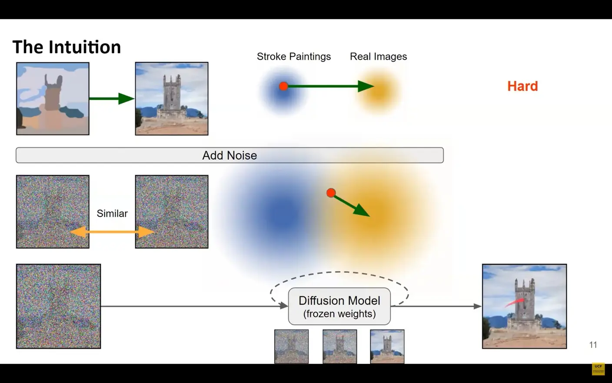
It is hard to go from stroke painting to real image. The distribution is far away, e.g. a stroke painting is smooth and a real image has high frequency detail.
When we noise them the distributions are closer together. We have made it easier for the model to reverse this diffusion process and go from noise to detail.
2SDEdit paper
(figures from arXiv:2108.01073)
We assume no dataset mapping from guides to real images like GAN based approaches.
- Not like a segmentation problem either, the image does not have colour – class labels.
- We are so general purpose we can just put an image in and move towards a realistic image.
So how do we solve the problem?
- If we understand images well enough like a human (general purpose model) we can put the drawn image into the model and it would know how to move it towards a real image.
- Diffusion models surpass GAN limitations so we can make massive general purpose models.
- We just control sampling with the guide, and the general purpose diffusion model moves it in the direction of a real image.
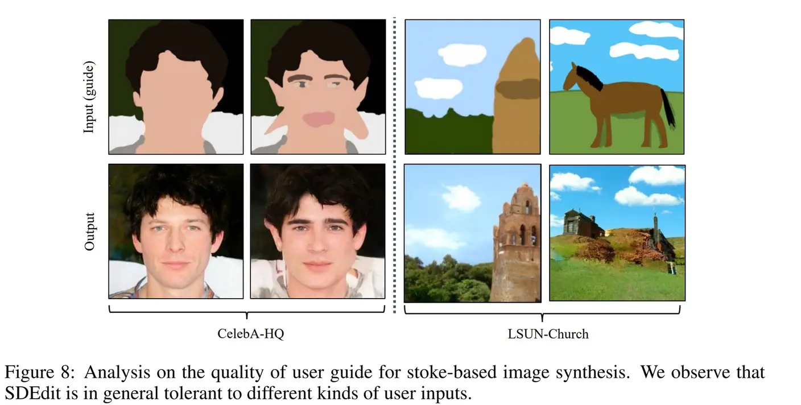
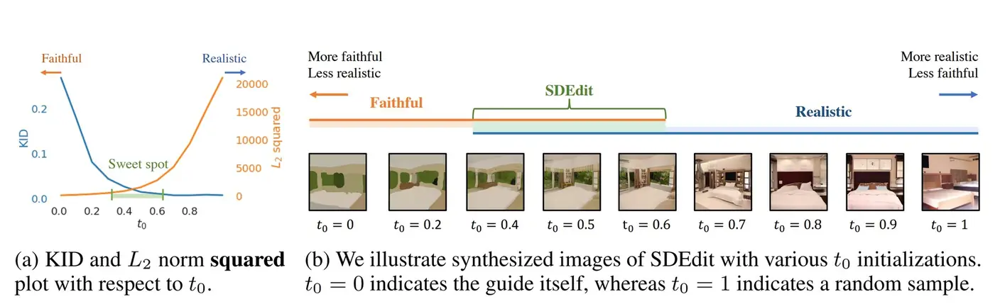
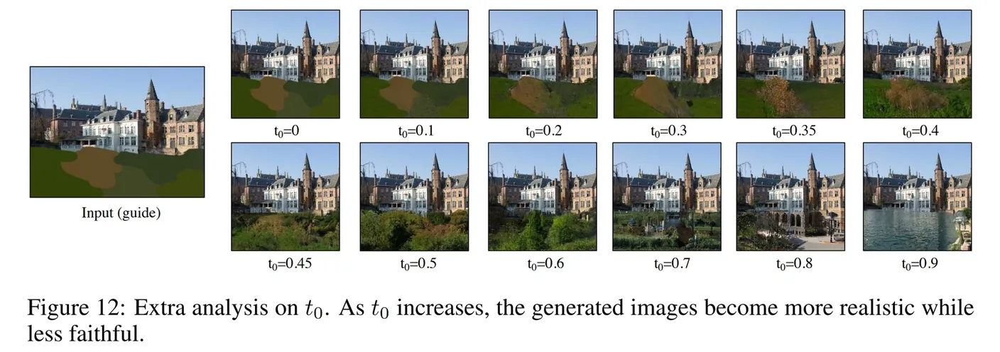
We need to control the diffusion timestep to control the extent of diffusion guiding. More noise steps mean the model has less guiding to the input image but more DOF (easier) to create a realistic image matching the learned data distribution.
- Key hyperparameter is therefore t0
- We want to start at maybe between 30–60% of the way
- We can just use the standard scheduler and an if → continue statement to get there.
If the guide is far from any realistic image we must tolerate deviation.
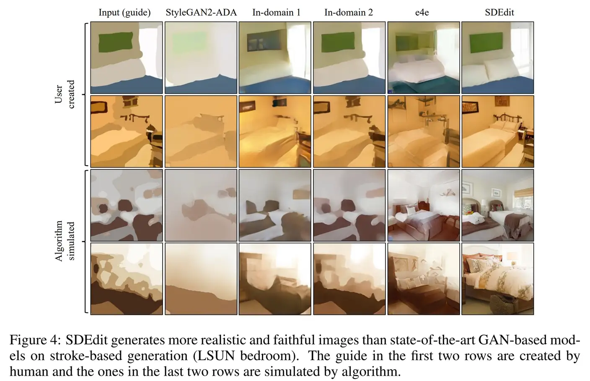
3VAE performance
It’s important to make sure our VAE is good since we are inputting the guide in latent space. We want to know that the model is receiving a meaningful latent representation of the guide, otherwise that will adversely affect performance.
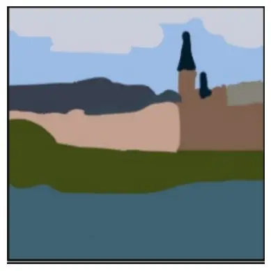
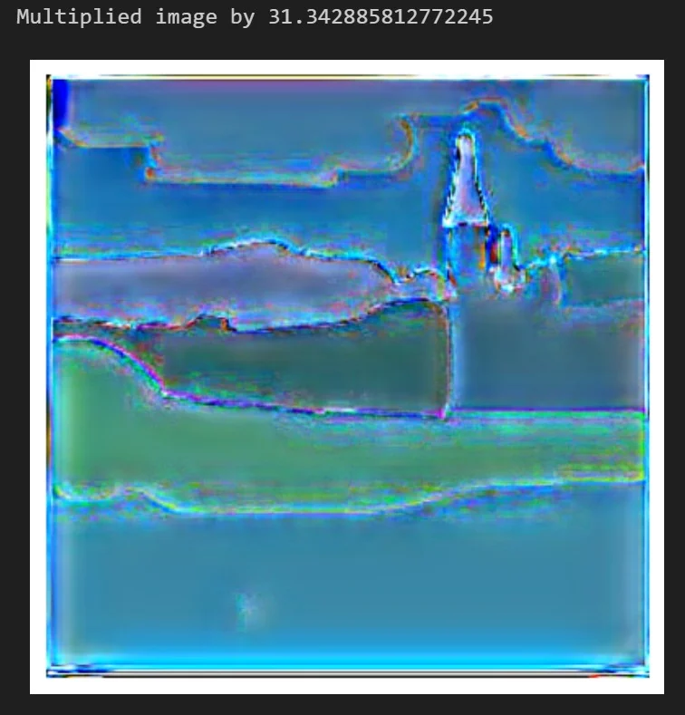
Above we do an end-to-end forward pass of the VAE and you can see from 512 to 64 it reproduces faithfully.
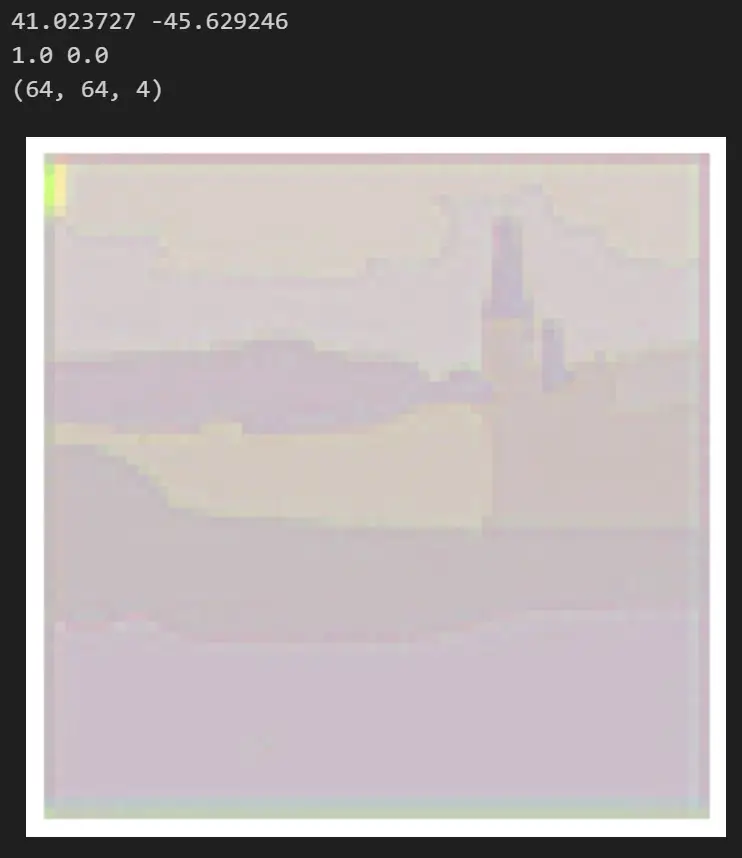
When doing an encode pass of the VAE, the output does change a bit due to sampling from the normal distribution N(μ, σ) (used to regularize output) but it doesn’t change very much as shown below:
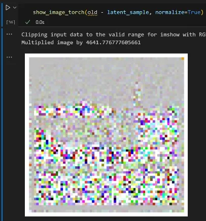
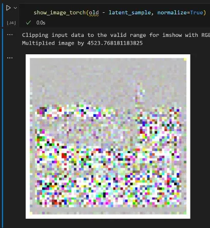
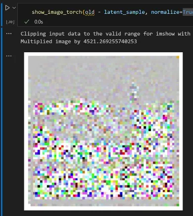
4Changing input size
What happens when we change the size of the input? All of these are with 100 iterations, the same prompt (“a photograph of an astronaut riding a horse”) and the same latent noise vector.
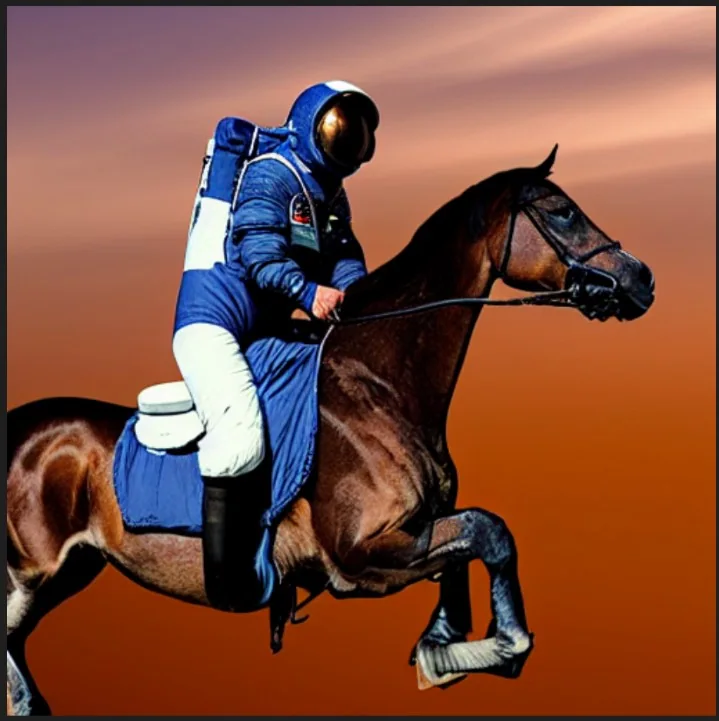
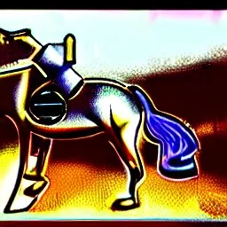
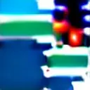
The problem with training at low resolution and then training the final model on high resolution is that images at high resolution contain a lot of redundant information but images at low resolution do not. This is demonstrated in the figure below.
- For the same amount of noise, a low resolution image will be corrupted much more than a high resolution image.
- We therefore need to scale the amount of noise by image resolution.
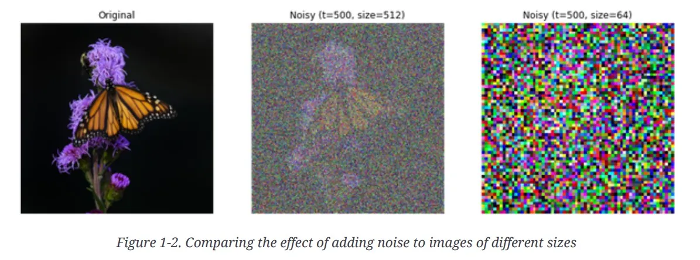
Trying to scale the amount of noise to compensate
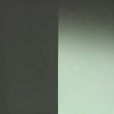
Same conditions as above. Neither of these worked well. Part of it is probably that the conditioning information needs to be scaled as well. Also the diffuser might need to be retrained given the scale spaces are different and so the CNN layers need to be different — if we re-trained, this would solve these issues.
5Varying strength of guide image
We have two hyperparameters here.
t0
- This controls the noise added to the guide and how many iterations we do (as we have to remove the
noise we added). Horrible 2 variable control with 1 parameter.
- If we add more noise we take more steps to remove it.
- If we add less noise we take less steps. The diffuser has less DOF so it doesn’t make sense to make it take more steps.
- Hence why this idea doesn’t work: we could make it so we do the same number of iterations, and the scheduler has to make the diffuser take bigger steps (timestep conditioning).
Guide scalar
- Controls the strength of the guide latent image.
- In the paper, for each pixel (x, y) they use N(0, 1) × scheduler_variance(t0) + guide.
- As it is unspecified in the paper I assume guide ~ Z(0, 1).
- So given the table above we want to give the guide the appropriate scale for the model.
- When increasing the number of iterations as shown below, std follows the same pattern, so I think we will be ok for varying num iterations and the output staying consistent.
So if you take less steps (e.g. t = 0.8) the guidance has more weight, but isn’t that what we want, as the point of big t is to increase faithfulness to the guide?
Remember we want to vary between faithful and realistic.
- More iterations = more DOF for the model to produce a realistic image.
- Less iterations = less DOF for the model to change things, so it produces a more faithful image.
A good guidance scale parameter is needed so the model with both less and more iterations can produce a good output. This goes hand in hand with the scheduler which floods the image with noise. Can we find a good parameter that is faithful to the scheduler?
6Searching over t0 and guidance scale
Before doing a 2D search I wanted to input the guide like training images would have been when the model was trained to denoise. I tried it through the encoder (left) and multiplied by the scaling factor (0.18215) used in the decoder (right). It didn’t really work, probably because the distribution was modified during training (I think to ~N(0, 1)).
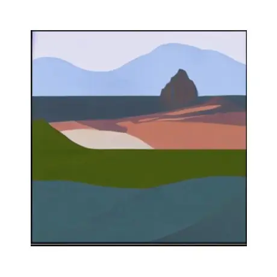
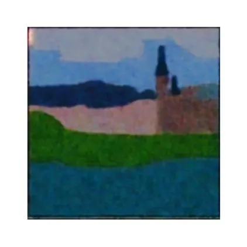
[Warning: BUG, the seed was changing each time]
Results of a 2D search on guidance scale and t0 (diffusion timestep start) with 20 iterations. Part A with the prompt:
- “High quality Nikon D850 DSLR 4k photo with F11 aperture, high resolution and realistic.”
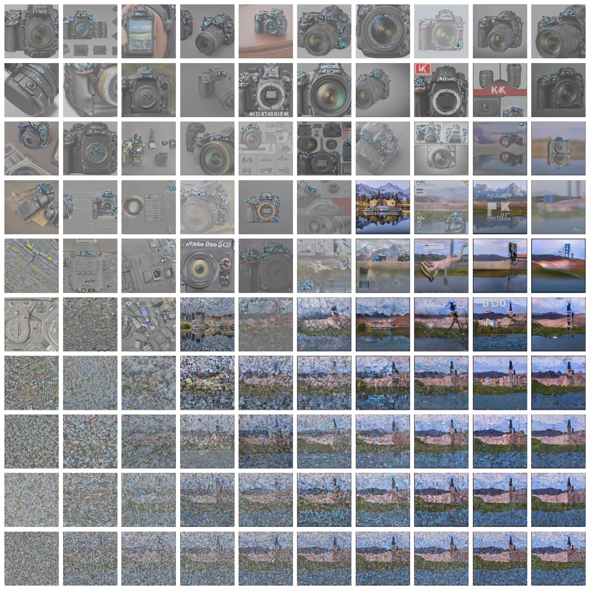
[Warning: BUG, the seed was changing each time]
Results of the 2D search on guidance scale and t0 with no prompt:
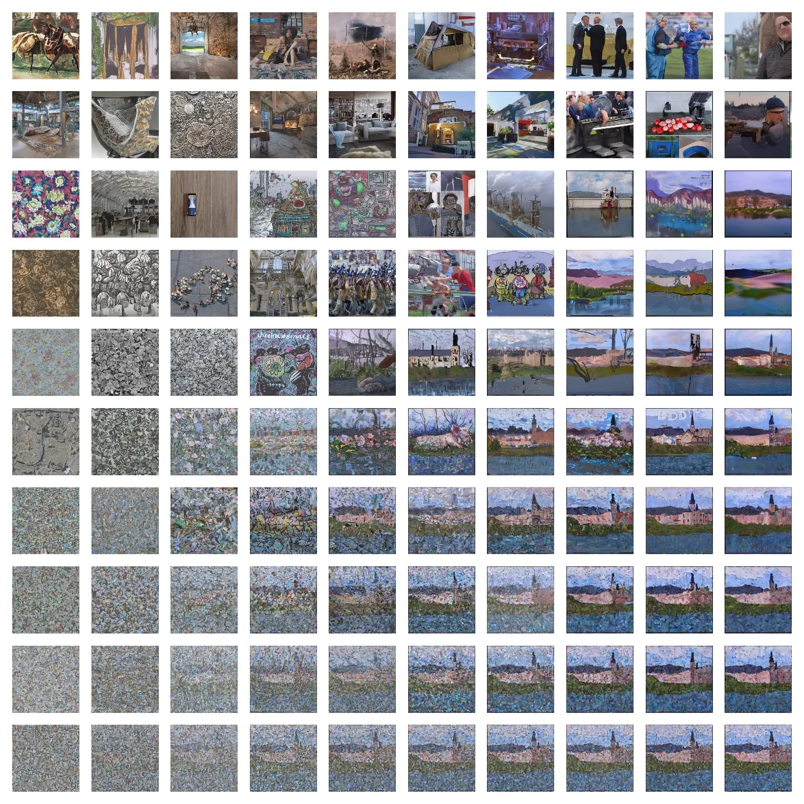
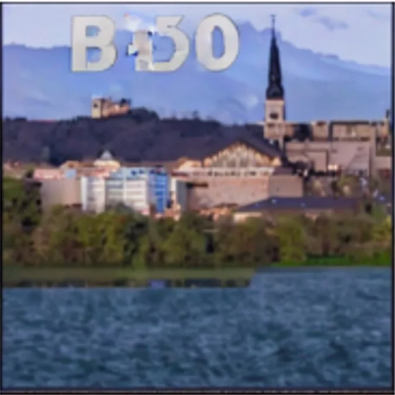
With a prompt the outputs were generally poorer than without.
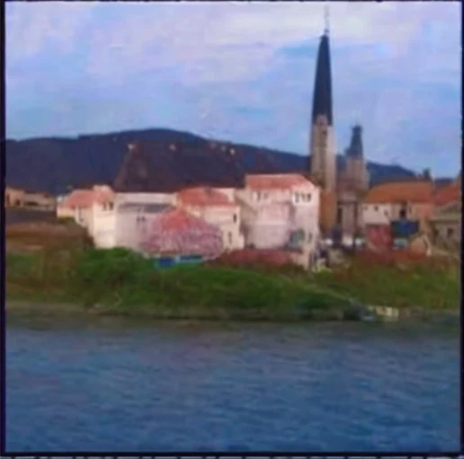
This makes sense here as the paper recommended t0 = [0.3, 0.6]. This is reasonable between faithful and realistic.
[Warning: the seed was changing each time]
With 200 iterations and t0 = 0.5, guidance scale 0.7 to 1.1:
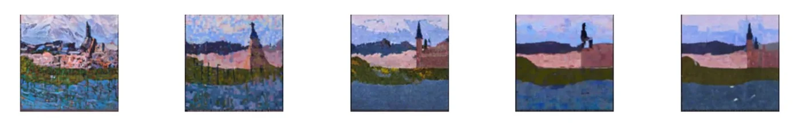
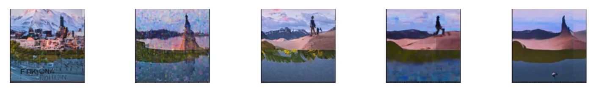
Let’s try again with no prompt but varying iteration scale.
7Searching over iterations
What happens if we change the number of iterations, with no prompt, t0 = 0.4 and guidance scale = 0.9?
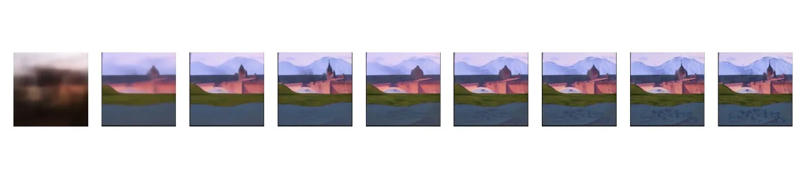
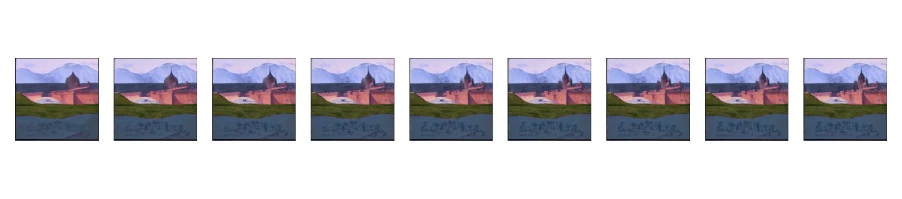
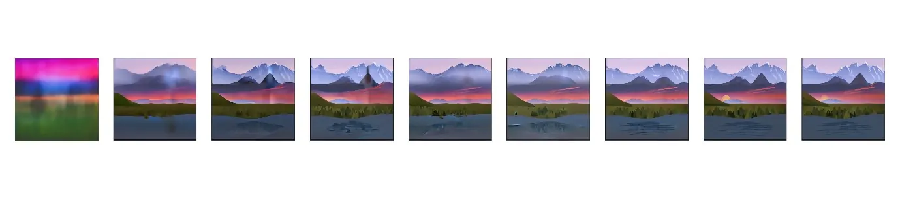
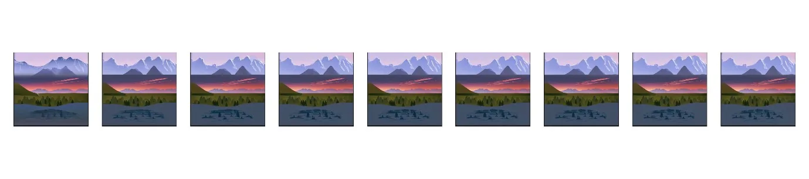
You can see how much more of an effect the prompt has on the image than the condition map. This is because it is applied each iteration through cross attention. We could experiment with guidance scale (set to 7.5 here).
8Running over lots of different guides
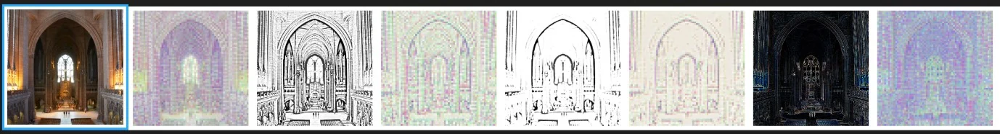
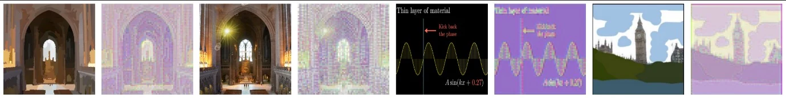
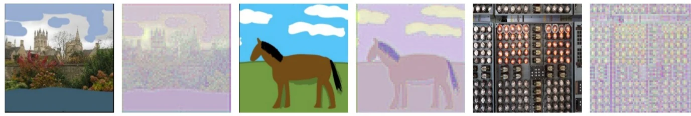
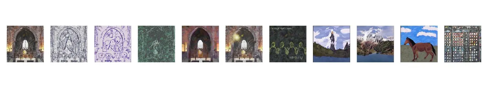
9Conclusion
The model is trying to map the image to the distribution it learned by denoising (which perturbs the model). We input a new image and it is mapped to a realistic one. We do this entirely by sampling the model’s latent space to produce a good result. We do not train the model on this specific task; rather the idea here is that the model is so big it covers a large distribution of image data and therefore knows how to perform this mapping on new data.
Improvements
Conditioning is lost over time. As we iterate through, we lose sight of the original conditioning so the model diverges. We would be better off training the model with image conditioning cross-attention (like we have with text). We could train the model with (high, low) quality image-image pairs. We would treat user input as low quality and the model aims to improve it. This seems like a much better setup to me because we get the advantages of training a model on the problem (and the benefits of cross-attention conditioning) as opposed to using a pretrained model and trying to sample from latent space to get a good result.
With this current conditioning we also lose out on iteration steps, e.g. if t0 = 0.5 we lose half our iteration steps, hence this horrible balance between faithfulness and realism. With this idea we could get both.